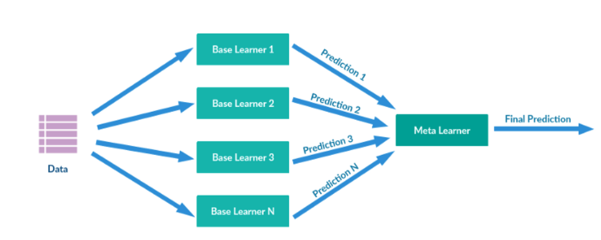

Chapter 10 Ensembles
實用連結：
Ensembles中文稱作集成學習，意思是想辦法將多個預測模型合起來，然後預測效果（或分類）的表現可以勝過單一個模型。
一個比較傳神的比喻是：
每一個個別的機器學習模型都像是盲人摸象故事裡的盲人
若能將盲人（個別模型）所看到的結果綜合起來，我就可以得知大象是長怎麼樣子（有良好的預測或分類表現）
常見的手法即有以下三種：Bagging/Boosting/Stacking
Bagging
Bagging基本上就是Bootstrap aggregation。我透過不斷重新抽樣本並丟入模型（我們可以有多個模型並對其做訓練），透過反覆重抽，我可以觀察到資料本身的bias(the mean) & variance(the standard deviation)
最終取所有模型的預測表現之平均。藉此可以在不影響偏誤（bias）下，降低我預測結果的變異程度（variance）。
至少我不會一次丟到靶心，下一次卻什麼也沒射中。
Boosting
是一種多模型的接力使用。
我會刻意放大A模型預測錯誤的地方之權重，並且做為接續之B模型的訓練重點。
R Code Example
#The following object is masked from ‘package:dplyr’:slice
#be aware the same slice function from two different package
library(xgboost)
modelLookup("xgbLinear")
modelLookup("xgbTree")xgb_opts = expand.grid(eta=c(.3,.4),
max_depth=c(9, 12),
colsample_bytree=c(.6,.8),
subsample=c(.5,.75,1),
nrounds=1000,
min_child_weight=1,
gamma=0)set.seed(1234)
#the R code form m-clark has the object called 'good'. Be aware the variable name is different or not, and the technique are all the same
results_xgb = train(quality~.,
data=wine_train,
method='xgbTree',
preProcess=c('center', 'scale'),
trControl=cv_opts,
tuneGrid=xgb_opts)
results_xgb
preds_gb = predict(results_xgb, wine_test)
confusionMatrix(preds_gb, good_observed, positive='Good')Stacking
 在stacking裡面，重要的是那些單一預測模型之預測結果，都是最終meta-learner模型所需的訓練資料的來源。
一般來說，若我們手上已經嘗試過多個單一預測模型，則我可以選擇像bagging一樣，將表現平均（voting），一般平均或者加權平均都沒問題。或者選擇stacking
首先我利用不同的單一模型做訓練，並且將資料餵入並得到每一個模型下的y_i_hat，並且將這些y_i_hat，用為meta_learner model的資料來源。
等到meta_learner選定好之後，並用原始資料以及y_i_hat的資料一起去訓練meta_learner模型。
stacking的感覺其實有一點像NNet，把中間加了一層，但是不代表越多層準確度就越好。